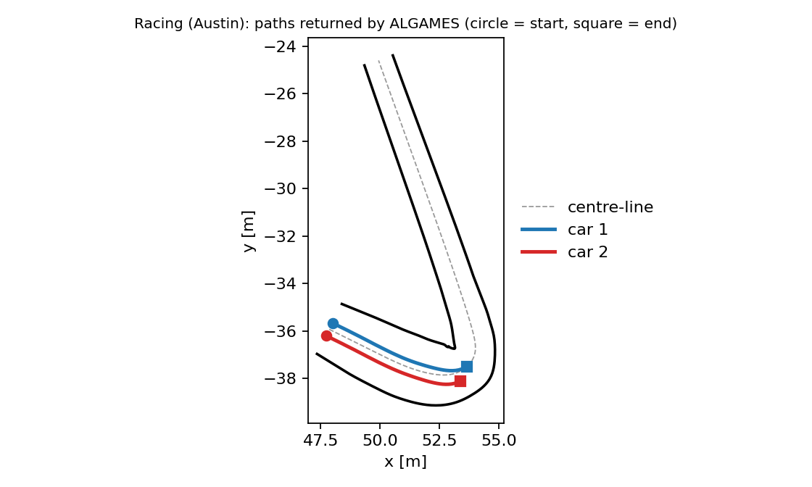

Racing (Austin)
Two cars race head to head on a 20 m segment of the Circuit of the Americas at tenth scale. The problem is the two-car racing benchmark of Zhu and Borrelli ([ZB24]), used in the FALCON paper ([OA??]) to compare against their DGSQP solver. It is a small game with hard numerics: stiff nonlinear tyre dynamics, a progress state decoupled from the position, a competitive terminal cost and track-boundary constraints.
The definition, reference plan and metrics are tested (test/falcon_cases_test.jl in DifferentialGamesBenchmarks.jl). On the nominal game below ALGAMES returns without convergence and without improving on its starting plan; FALCON and DGSQP with tuned parameters solve the hairpin version (see Solving the hairpin with FALCON and DGSQP). The examples on this page were run against the current sources but are not executed by the documentation build.
The game
using DifferentialGamesBenchmarks, DifferentialGamesBase
track = austin_track() # RaceTrack: C² centre-line, left/right half-widths, 19.985 m
params = RacingParameters() # tenth-scale car, N = 50 steps of 0.05 s
game_ = racing_game(track, params) # a two-player PD-GNEP
case = RACING_AUSTIN_NOMINAL_V1 # CaseID(:Racing, :AustinNominal, v"1"); game(case) rebuilds itModel
Each car has the 7-state dynamic bicycle model with Pacejka lateral tyre forces and all-wheel drive, extended with a progress state $s$ that advances at a controlled rate:
\[q=[v_x,\ v_y,\ \dot\psi,\ x,\ y,\ \psi,\ s],\qquad u=[a,\ \gamma,\ u_s],\qquad \dot s=u_s ,\]
with acceleration $a$, steering angle $\gamma$ and progress rate $u_s$. The lateral forces are $F_y = D\sin\!\big(C\arctan(B\alpha)\big)$, $B=10$, $C=2.5$, with the slip angles $\alpha_f,\alpha_r$ of the front and rear axle. Parameters (RacingParameters): wheel base $l_f=l_r=0.18$ m, mass 70 kg, $I_z=2.0627$, friction $\mu=0.9$; bounds $a\in[-2.1,2.1]$, $|\gamma|\le0.436$, $u_s\in[0,4]$.
The tyre model is stiff. Integrated with one RK4 step per 0.1 s the same control sequence gives a different trajectory (in the test case the two cars ended 0.055 m apart instead of 0.6 m). The solvers here take one RK4 step per dt, so the benchmark uses dt = 0.05 (50 steps over the same 2.5 s). The FALCON script instead wraps an RK4 map with ten substeps inside each 0.1 s step; the Base solvers have no such map-style dynamics, so the horizon is refined instead.
Track
RaceTrack is a natural cubic spline through 41 waypoints (data/f1_austin_segment.csv, the arc-length range 60–80 m of the tenth-scale track, re-based to 0), with spline half-widths to each side (0.63 m to 1.40 m on this segment). The unit tangent, the contouring error $e_c$, the lag error $e_l$ and the signed lateral offset $e_y$ of a point relative to the centre-line point at arc length $s$ are track_tangent, track_errors.
Objective and constraints
Each car $i$ minimizes
\[J_i=\sum_k \tfrac12\,u_k^\top W u_k+\tfrac12\big(q_c\,e_c^2+q_l\,e_l^2\big)\;-\;w_p\,s_i(T)\;+\;w_c\big(s_j(T)-s_i(T)\big),\]
the contouring/lag cost ties $s$ to the car's position (the progress integrator alone is decoupled from $(x,y)$), the progress reward drives the car forward and the last term makes the race competitive: a car is paid for the margin by which it is ahead. Constants: $W=\mathrm{diag}(1,1,10^{-4})$, $q_c=0.1$, $q_l=20$, $w_p=1$, $w_c=5$.
| Constraint | Form |
|---|---|
| Control bounds | ControlBounds per car |
| Track boundary | PrivateInequality per car: $e_y-\text{left}(s)\le 0$ and $-e_y-\text{right}(s)\le 0$ |
| Collision | one SharedInequality: $d_{\min}^2-|p_1-p_2|^2\le0$ with $d_{\min}=2\sqrt{(L/2)^2+(W/2)^2}\approx0.595$ m, the diameter of the bounding circle of a 0.56 m × 0.2 m car |
The cars start side by side at $s=0$ with lateral offsets $\pm0.3$ m and speed 2 m/s (racing_starts).
Differences from the FALCON script
| FALCON script | This benchmark |
|---|---|
Interpolations.jl cubic spline, pre-sampled tangent | own natural cubic spline (no dependency), analytic tangent |
| RK4 map, 10 substeps of 0.1 s | continuous ODE; the solver takes one RK4 step per dt = 0.05 |
| input-rate penalty $\tfrac12 w_{\Delta}(u-u_{\text{prev}})^2$ and rate bounds | omitted (they need the previous control, which only some solvers expose) |
| opponent progress read from the solver's workspace | read from the joint terminal state; a solver that passes only a player's own block pays the own-progress cost only |
| single-agent FALCON warm start | closed-loop centre-line plan racing_warmstart |
Solving it
using DifferentialGamesBaseSolvers
ws = racing_warmstart(track, params) # controls of a closed-loop centre-line plan
sol = DifferentialGamesBase.solve(game_, ALGAMES(; outer_iter = 20, inner_iter = 15); warmstart = ws)
res = evaluate(racing_evaluator(; track), game_, sol)
res.quality[:progress] # final arc length of each car, in metres
res.quality[:min_separation] # closest approach (must be ≥ 0.595)
res.quality[:track_clearance] # distance of the centre to the nearest edge (negative = off track)
res.quality[:lag] # distance between a car and the centre-line point at its own sracing_warmstart simulates each car with its own dynamics under curvature feed-forward plus lateral and heading feedback, holding the car's initial lateral offset and driving at 2.5 m/s, and returns the controls it applied; the progress rate is set to the forward speed so $s$ stays tied to the position. It is the reference plan the tests check: it stays on the track, keeps the cars apart and progresses over 5 m.
Result with ALGAMES (20 outer iterations of up to 15 inner iterations, run on the machine used for this documentation):
| Quantity | Value |
|---|---|
| wall time | 37 s |
sol.converged | false |
| final progress, car 1 / car 2 | 5.987 m / 5.989 m |
| minimum separation | 0.597 m (limit 0.595 m) |
| track clearance | 0.72 m (feasible) |
| lag | 0.45 m |
| solver's optimality residual after 20 outer iterations | 2.8·10⁴ (not decreasing) |
The solver does not take a step: in every outer iteration the line search of the first inner iteration returns step size zero and the returned trajectory is the warm-start rollout, which is feasible by construction (so the constraint check passes) but is a path, not an equilibrium. Larger regularization (reg = 1, reg = 100) and a larger penalty (ρ_init = 100) give the same trajectory, and with no warm start the cars do not move (progress 0). The default :nash_residual metric reports 0 for this trajectory; it checks cost bookkeeping only (see the warning).
Do not read the progress above as a race outcome. Both cars follow the same plan, so there is no winner, and nothing here is a solution of the game. The nominal game with dt = 0.05 was not run with FALCON or DGSQP; their tuned results below are for the hairpin game of the FALCON paper.
The hairpin and the 50 initial conditions
austin_hairpin_track() is the 30 m segment s ∈ [60, 90] m that contains the first hairpin (the sharp-corner example of the FALCON figure) and the case Racing.AustinHairpin_v1 the same game on it with a 4 s horizon. austin_benchmark_initial_conditions() returns the 50 random initial conditions of the FALCON paper's comparison against DG-SQP on the 20 m segment (7 states per car, q0_1, q0_2), together with the results of the original Python DG-SQP on them, and racing_game_from_ic(i) builds the game started from the i-th one. The FALCON benchmark uses ten RK4 substeps per 0.1 s; the cases here take one RK4 step per dt = 0.05 (a 2.5 s horizon is N = 50)..
Solving the hairpin with FALCON and DGSQP
The sharp-corner comparison of the FALCON paper uses the exact FALCON game: dynamic bicycle with ten RK4 substeps per 0.1 s, N = 25, the segment s ∈ [60, 80] m, contouring/lag weight $q_l=20$, hard track boundaries and a collision constraint. The game is built by src/solvers/DGSQP/examples/austin_hairpin.jl (austin_hairpin_game) in DifferentialGamesBaseSolvers.jl, and by the script examples/f1_austin_benchmark.jl in the FALCON repository. Both solvers start from the same single-agent warm starts and stop at the same tolerances: feasibility $\le10^{-4}$ and optimality $\le2\cdot10^{-2}$.
Both solvers converge on all 50 initial conditions with the parameters below. The parameters were tuned on these 50 initial conditions, so another problem may need its own.
FALCON
using DifferentialGamesBase, DifferentialGamesBaseSolvers, FALCON
solver = falcon(;
r0 = 0.5, r_max = 1.0, r_min = 1e-5, α_2 = 1.5, η = 100.0, # trust region, proximal weight
w0 = 10.0, β = 2.0, γ_δ = 0.9, ω_max = 1e4, # augmented Lagrangian
ϵ_opt = 2e-2, ϵ_feas = 1e-4, max_iterations = 400, # convergence
socp_tol_loose = 1e-5, socp_tol_tight = 1e-5, socp_tol_switch = 1e-2,
infeasibility_preprocessing = true, preprocess_iters = 5,
ζ_cert_abs_tol = 2e-3, ζ_cert_rel_tol = 1e-2, ζ_cert_polish_ΔJ_tol = 1.0)
sol = solve(game, solver; warmstart = ws) # game, ws: the hairpin PDGNEProblem and its single-agent warm startWhat differs from the defaults and why: ω_max = 1e4 (the default cap 1e3 stops a few initial conditions short of feasibility), r_min = 1e-5 (lets the trust region recover once the penalty is large), and the relaxed ζ-certificate tolerances (the defaults reject most convexified solves on this game). See FALCON.
DGSQP
using DifferentialGamesBase, DifferentialGamesBaseSolvers
solver = dgsqp_tuned_options() # DGSQP(; ...) with the settings below
res = dgsqp_solve(game_ol, w0; solver) # game_ol: the OpenLoopGame of the hairpin, w0 the warm startdgsqp_tuned_options() is the racing-paper variant of DGSQP (non-monotone step acceptance with decaying regularization) with reg = 1e3, reg_decay = 0.9, delta_decay = 0.95, merit_decrease = 0.01, nms_frequency = 10, nms_memory_size = 10, sqp_iters = 500, p_tol = 1e-4, d_tol = 2e-2, plus two extensions of the reference code (an elastic QP when a QP is infeasible, and recovery from the last checkpoint after a divergence). The reference settings converge on 33 of the 50 initial conditions; the sweeps behind the tuned settings and the timings are on the DGSQP page.
Visualization
With CairoMakie or GLMakie loaded, gameplot(RACING_AUSTIN_NOMINAL_V1, sol) draws both cars' paths and the track edges (a visualizer is registered for the case).

Both cars' paths on the Austin segment (left and right edges and centre-line); the cars start side by side and follow the reference plan. Figure produced from the run above.